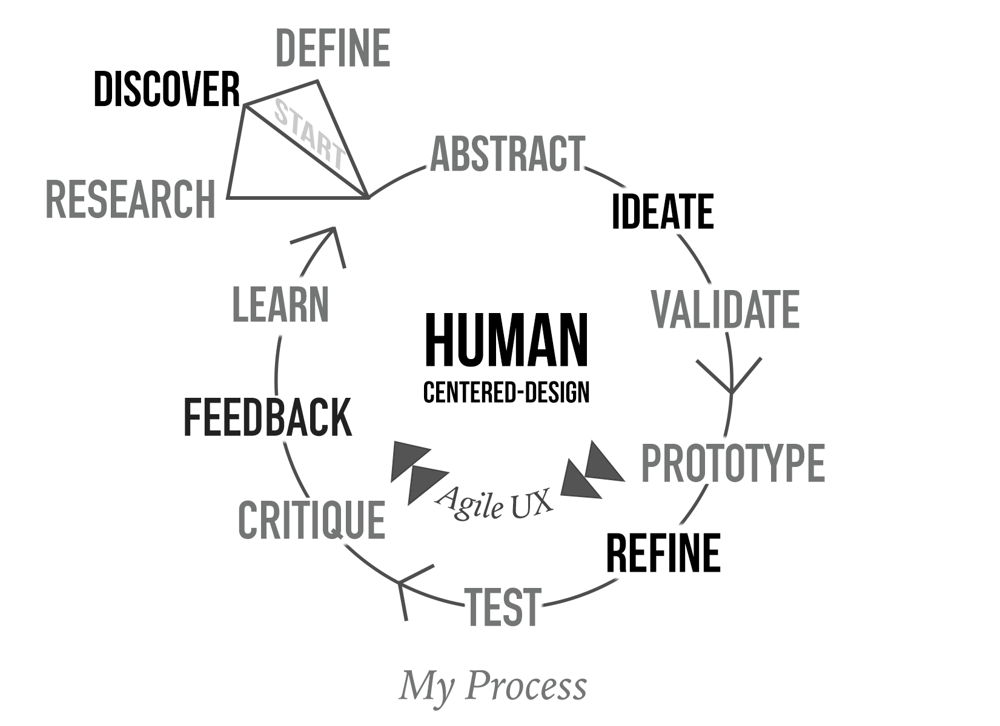
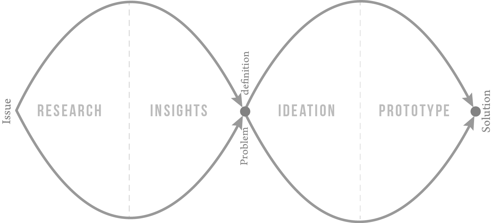

So often in the world we encounter problems that are framed in an “Us vs. Them” mindset. In other words, for one group to prosper, the other must suffer.
This kind of framing is short-sighted and it forces us to take sides and stay stuck in our way of looking at a problem. Design thinking offers a much needed antidote. By hearing and understanding the needs of all groups, we can craft non-zero sum win-win solutions.
When approaching any problem, it's tempting to jump right into the solution, the implementation, the visual design, and the polish. However, you risk missing the forest for the trees. When a problem or issue is identified, the instinct is to assume that the client giving you their problem has identified the correct issue.
Errors or issues usually occur because of a long line of corroborating events that led to the failure, like a fly going through the holes in slices of swiss cheese. What they're giving you is often just a signal or a thread that needs to be pulled to untangle the issue. The first half of the double diamond methodology is simply defining the real problem.
When doing research, it is not enough to identify human error and stop searching. As designers, we are tasked with always digging deeper, asking “Why?” like an annoying kid, and continually searching for the root cause.
Behind every seemingly simple answer, there's always another perspective, nuance, or angle to be uncovered. While you can't eliminate your assumptions, you can start testing and unpacking each one. In the end, it is conceptual, big-picture UX thinking that casts the widest net to find the best solutions so that precious resources aren't squandered.
Philosophy
Start with a great experience and find tech that enables it, not the other way around:
- Ground design in deep research.
- I am not the user.
- Focus on core user needs.
- User test early and often.
- Always ask "Why?" and dig deeper.
- Keep it simple, stupid. (KISS)
- Remove steps and complexity whenever possible. (Less is more.)

Methodology
Double-Diamond Methodology, Human-Centered Design, Design Thinking, Collaborative/ Participatory Design, Lateral Thinking, Rapid Iteration and Prototyping, Constant Feedback and Usability Testing, Agile/ Lean UX
- Test early, test often.
- Build, measure, learn, repeat.
- Iterate, get feedback, user test, repeat.
- Do more with less (Occam's razor).
- Don't repeat yourself. (DRY)
- Keep calm, and iterate on.
Process
I follow the Double-Diamond Methodology, which starts with exploration and research. First we ask, “What are we trying to solve?”, “Is this the best method to solve this problem?”, and “Are we sure this is the users' problem?.” The more you research your users to better understand a day in their shoes, the more empathetic you'll be to fully understand a day in their life and their needs. The problem the client or user thinks they have isn't always the actual issue so we constantly ask “Why?” to drill deeper. After interviewing potential users, gathering data, and creating insights, we create a hypothesis on what the central problem is. We also ask “Who else has solved this problem?” and “How successful have their approaches been?”

Next, in the ideation stage we go wide, coming up with sometimes absurd ‘outside the box’ sorts of ideas. After ideation, we prune down and latch on several core approaches, letting only the best ideas come through. From here, we develop a prototype and start testing against a whole range of potential users, ensuring the solution makes sense to a wide audience. Lastly, we can start engineering and building, continuing to work out usability issues, incorporating regular feedback, and squashing bugs in the experience and the code.